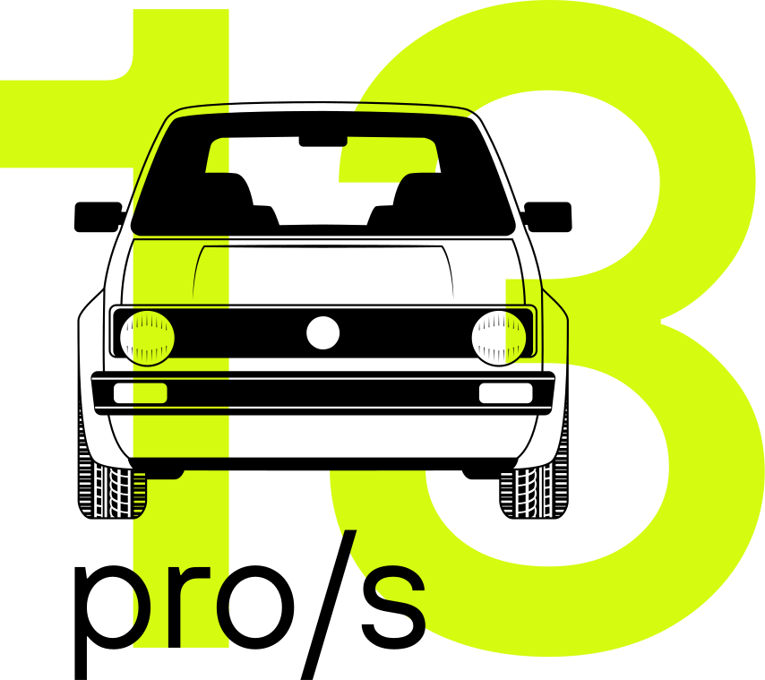
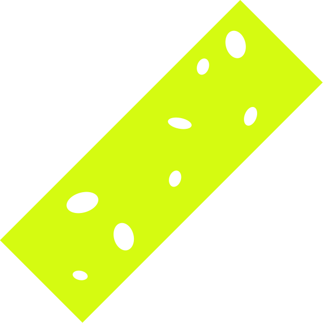
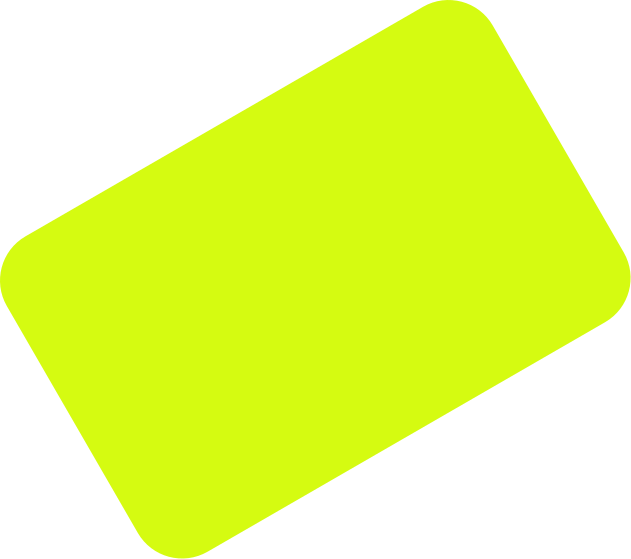

= 13 tonnen
Plastik
Welt
Plastikproduktion
weltweit – Live

Plastikproduktion
weltweit – Live
= 13 tonnen
0
tonnen
Plastikproduktion
weltweit – Live
0
Stk.
0
tonnen
Wohin geht
der größte
Teil
des Plastiks?
Natur
Deponien
Recycelt
Verbrannt
Wohin geht das Plastik?
(in Tonnen)
28%
Deponien
0
Natur
0
Verbrannt
0
Recycelt
0
Plastik wird mehr
(in Tonnen)
2026 –
2026
4.9
Mrd.
Deponien
1.25
Mrd.
Natur
130
Mio.
x7
Ozeane
Fisch im Ozean
≈1.5 Mrd. t
Plastik im Ozean
≈
130
Mio. t
2026 –
2026
9%
Der
beliebteste
Müll im Ozean?
Plastiktüten
Plastikflaschen
Zigarettenfilter
Strohhalme

Zigarettenfilter
0 tonnen
Mikro-
plastik
Jedes Auto
produziert
Mikroplastik
1–4
kg pro Jahr
Quellen von
Mikroplastik
Reifenabrieb
Kleidung
Plastikmüll
Industrie
Kosmetik
Farben & Lacke
Wo findet man
Mikroplastik?
Ozeane
Flüsse
Seen
Strände
Küsten
Meeresboden
Tiefsee
Korallenriffe
Ackerböden
Wälder
Wüsten
Straßenränder
Städte
Mülldeponien
Luft
Hausstaub
Regen
Schnee
Wolken
Arktis
Antarktis
Gletscher
Trinkwasser
Lebensmittel
Fisch
Meeresfrüchte
Salz
Honig
Tiere
Menschen
Blut
Lunge
Plazenta
Heute
fast überall
auf der Erde
Mikroplastik
in
unseren
Häusern
Wasser
Lebensmittel
Luft
Kleidung
Wie viel
Plastik
kann ein Mensch
pro Woche essen?
1g
5 g
50 g
180 g

Bis zu 5 g Plastik
pro Woche über
die Nahrung
0 tonnen
Lösungen
für das
Problem
1
Plastikabbau durch
Enzyme und Bakterien
2
Chemisches
Recycling
3
Bioplastik aus
pflanzlichen Rohstoffen
4
Selbstabbaubares
Plastik
5
Mikroplastik-Filter
6
Plastik als
Energiequelle
Plastikproduktion
weltweit – Live
= 13 tonnen
0
tonnen
Wir werden auch morgen
noch mit Plastik leben.
Die Frage ist:
Wie gehen wir damit um?
Vielen Dank
für Ihre
Aufmerksamkeit